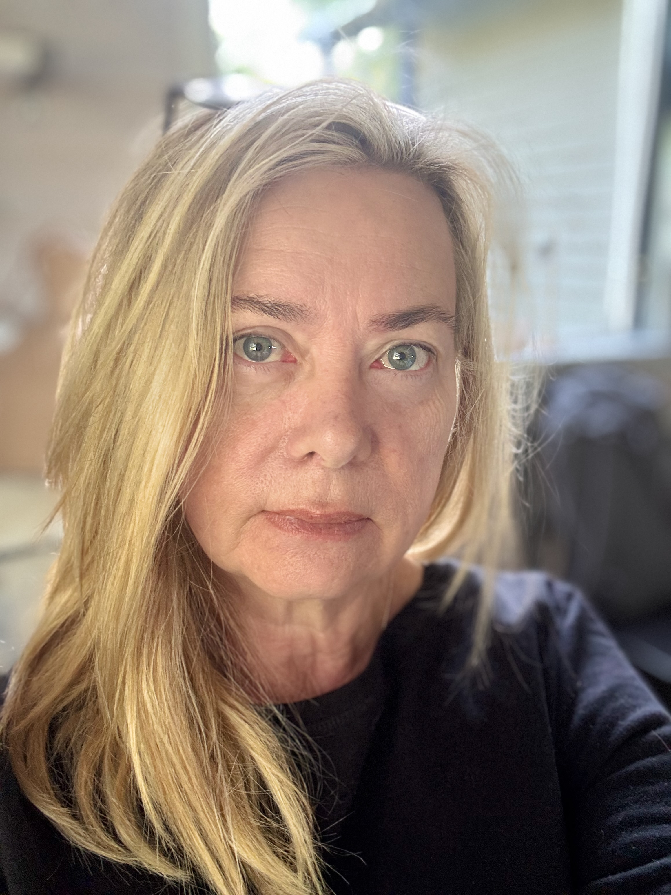

✦ En blogg om vardagshjärna och framtidsnyfikenhet
Senast uppdaterad: 6 juni 2026
Raket #000 — Uppskjutning
Några är startklara och susar iväg. Några behöver putsas, fejas, repareras eller laddas om. Alla bär på något. Det är det jag skriver om — öppet och på riktigt.
Några skjuter iväg i gryningen. Några väntar fortfarande på sin bränslepåfyllning. Några har jag tappat bort — och hittat igen på oväntat ställe. Det är mitt huvud. Välkommen in.
Raket #100 — Varje fredag
Varje fredag landar en raket. Inte med brak — utan mjukt. En stund för att landa, andas och hitta nuet innan helgen tar vid.
Det behöver inte vara stort. Det behöver bara vara äkta.
Ett spår, en tanke, ett andetag. Veckans soundtrack — kurerat för exakt den känslan av att äntligen kunna andas ut.
Inte perfekt. Inte produktiv varje dag. Inte alltid med svaren. Men meningsfull — i det lilla och det stora, i vardagen och i de stora frågorna.
Nyfikenhet är bränslet. Mening är destinationen. Och raketens bana — det är livet självt.
Varje raket som lyfter bär på ett syfte. Även de som ännu inte vet vart de ska.
Hangar — 6 av 100
Startklara raketer — reflektioner och insikter som poppar upp mitt i vardagen.
Raketer på ny kurs — nyfikenhet på teknik, förändring och det som inte finns ännu.
Raketer i låg bana — de små sakerna som faktiskt är stora.
Raketer under reparation — saker som gick sönder och vad det lärde mig.
Ljudspår till uppskjutningen — musik som sätter tonen för dagen.
Raketer utan destination — saker jag inte vet svaret på, men måste skriva om.

Piloten bakom raketena
"Jag är Monika — och mitt huvud stannar aldrig riktigt."
Jag jobbar, funderar, löser saker, förvirrar mig och börjar om. Varje dag är lite som att ha hundra raketer startklara — några skjuter iväg perfekt, några behöver putsas, några är i total behov av reparation.
Det här är min plats att skriva ner allt det. Utan filter, utan agenda — bara äkta nyfikenhet på livet som det är.
Landningsbana
Har något här satt igång en egen liten raket hos dig? Lämna en hälsning, en reflektion eller bara ett hej. Det behöver inte vara stort — det behöver bara vara äkta.